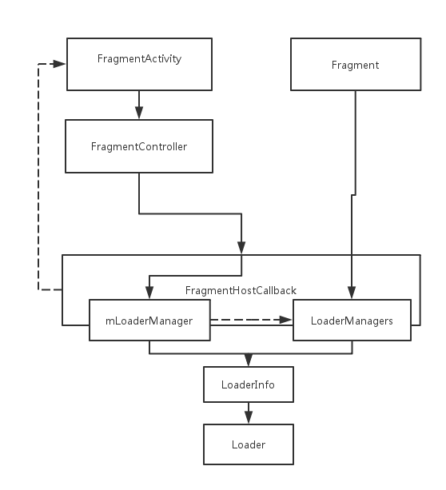
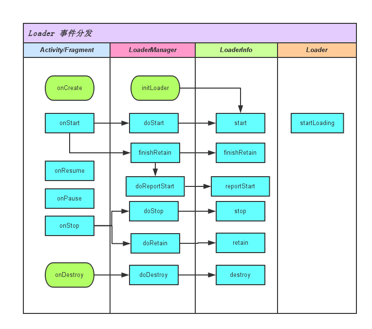

Loader 是一个失败的抽象
CommonsWare 在 13 年一个 SO 的回答中如是说，他认为 Loader 要做到内容变化时能通知回调(响应式)，这对于自定义实现 Loader 的人来说是个麻烦事。如果不做这个又与一般异步加载库无异，而在配置变更（configuration change）导致的 Activity 重启中得以保留的特性 Headless Fragment 也能做到。
我也一直很少接触 Loader，直到年前做了个 WeImagePicker，重度使用了 CursorLoader，发现其没有那么不堪，还挺好用的。
官方文档是这样描述 Loader 的特性：
- 可用于每个 Activity 和 Fragment。
- 支持异步加载数据。
- 监控其数据源并在内容变化时传递新结果。
- 在某一配置更改后重建加载器时，会自动重新连接上一个加载器的 Cursor。 因此，它们无需重新查询其数据。
所以用了 CursorLoader 后，WeImagePicker 只需寥寥几行代码就能获得良好的健壮性和响应图片库的变更。
但 Loader 虽然用起来简单，坑却不少，不可避免地要去读代码。这里我所用的代码是 support-v4-23.4.0。
LoaderManager 的创建
Loader 的使用由获取 LoaderManager 开始：
FragmentActivity#getSupportLoaderManager()
Fragment#getLoaderManager
分别在 Activity 或 Fragment 获取 LoaderManager实例。Loader 的逻辑是在 FragmentActivity 处理，以 getSupportLoaderManager 为例：
getSupportLoaderManager 实际调用了 FragmentController#getSupportLoaderManager， FragmentController 又调用了 FragmentHostCallback#getLoaderManagerImpl 最终返回 LoaderManager 实例。
LoaderManagerImpl getLoaderManagerImpl() {
if (mLoaderManager != null) {
return mLoaderManager;
}
mCheckedForLoaderManager = true; vv mLoaderManager = getLoaderManager("(root)", mLoadersStarted, true /*create*/);
return mLoaderManager;
}
LoaderManager 并不是单例，每个 Fragment 也有自己的 LoaderManager 实例。由 FragmentHostCallback 统一管理。 每个 LoaderManager 是存放在一个以 String 为 Key 的 Map 里。FragmentHostCallback 还有一个 mLoaderManager 保存的是 Activity 的 LoaderManager，FragmentHostCallback 同时也是 FragmentActivity 的私有成员， Activity 的 LoaderManager 是交给 FragmentHostcallback 管理的，FragmentActvity 通过内部成员类继承了 FramgentHostCallback 将其实例作为参数传递给 FragmentController。
Fragment 则直接通过 FragmentHostCallback#getLoaderManager 同时自己保存 LoaderManager 的引用，由自己管理 LoaderManager 的生命周期。
/**
*
* @param who 作为 Map 的 key
* @param started 创建 LoaderManager 的同时启动 Loader
* @param create 是否创建 LoaderManager
* @return
*/
LoaderManagerImpl getLoaderManager(String who, boolean started, boolean create) {
if (mAllLoaderManagers == null) {
mAllLoaderManagers = new SimpleArrayMap<String, LoaderManager>();
}
LoaderManagerImpl lm = (LoaderManagerImpl) mAllLoaderManagers.get(who);
if (lm == null) {
if (create) {
lm = new LoaderManagerImpl(who, this, started);
mAllLoaderManagers.put(who, lm);
}
} else {
// 这里要注意，lm 不为空，也可能是上一个 Activity 留下来的。
// 因为 mAllLoaderManagers 是作为 NonConfigurationInstances
// 可以在配置变更的 Activity 销毁重建中
// 保留下来。所以需要重新更新一下引用。
lm.updateHostController(this);
}
return lm;
}
who 作为 Map 的 key，它的命名规则如下：
Activity 的 who: (root)
Fragment 则由下面的代码生成
if (parent != null) {
mWho = parent.mWho + ":" + mIndex;
} else {
mWho = "android:fragment:" + mIndex;
}
这里有个坑，mWho 在 onCreate 的时候还是 null，所以 Fragment 不能在 onCreate 中调用 getLoaderManager，最好等到 onActivityCreated 再使用 LoaderManager。见 Issue 94081 !# TODO 需要实验验证
记住：
- 每个 Activity 和 Fragment 包括子 Fragment 都有一个 LoaderManager 实例（惰性加载）。
- LoaderManager 的结构，Activity 和 Fragment 的生命周期变化，是通过下图那样的关系一层层下发到 Loader.

Loader 的初始化
接下来看一下 LoaderManager#initLoader。LoaderManager 是一个抽象类，它的实现类是 LoaderManagerImpl。
LoaderManagerImpl 并不直接与 Loader 打交道，而是通过一个中间类 LoaderInfo
public <D> Loader<D> initLoader(int id, Bundle args, LoaderManager.LoaderCallbacks<D> callback) {
...
LoaderInfo info = mLoaders.get(id);
// 第一次运行将执行这块代码
if (info == null) {
// Loader doesn't already exist; create.
info = createAndInstallLoader(id, args, (LoaderManager.LoaderCallbacks<Object>)callback);
}
...
return (Loader<D>)info.mLoader;
}
其中的 createAndInstallLoader 分别调用了 createLoader 和 installLoader。
在 createLoader 中首先创建 LoaderInfo。LoaderInfo 存放着实际的 Loader 还有 id，args，和 callback。接着通过 callback.onCreateLoader(id, args); 创建实际的 Loader，这里的 Loader 便由实际的用户代码创建。
private LoaderInfo createLoader(int id, Bundle args,
LoaderManager.LoaderCallbacks<Object> callback) {
LoaderInfo info = new LoaderInfo(id, args, callback);
Loader<Object> loader = callback.onCreateLoader(id, args);
info.mLoader = loader;
return info;
}
installLoader 将 LoaderInfo 扔到 Map 里，如果带有 mStarted 标志则顺便启动 Loader，mStarted 只有在 onStart 生命周期才会置为 true，也就是说如果在 onCreate 中初始化 Loader，会等到 onStart 后这个 Loader 才会执行。
void installLoader(LoaderInfo info) {
mLoaders.put(info.mId, info);
if (mStarted) {
// The activity will start all existing loaders in it's onStart(),
// so only start them here if we're past that point of the activitiy's
// life cycle
info.start();
}
}
Loader 的启动（Start）
回头看 FragmentActivity 和 Fragment 代码， LoaderManager 是否带有 mStarted 标志是由 mLoadersStarted 控制的。对于 FragmentActivity， mLoadersStarted 是在 HostCallback 里。而 Fragment mLoadersStarted 是作为自己的私有实例变量。无论在 Actvity 还是 Fragment 都是在 onStart 将 mLoadersStarted 置为 true。并启动 LoaderManager(LoaderManager#doStart)。
LoaderManager#doStart 便是调用 LoaderInfo#start，这里会对 Loader 进行检查，如果是 null 便重新创建 Loader，同时 Loader 不允许是非静态成员类，应该主要是为了防止 Activity 的泄漏，但是匿名类却不受限制，匿名类也会泄漏 Activity 的引用。然后向 Loader 注册监听器。这里的监听器不是 LoaderManager.LoaderCallbacks ,而是 OnLoadCompleteListener 和 OnLoadCanceledListener，将 Loader 解耦，只和 LoaderInfo 关联。
void start() {
...
mStarted = true;
...
// 如果 info 还没有 Loader 会重新创建
if (mLoader == null && mCallbacks != null) {
mLoader = mCallbacks.onCreateLoader(mId, mArgs);
}
if (mLoader != null) {
// Loader 不允许是非静态成员类，应该主要是为了防止 Activity 的泄漏
if (mLoader.getClass().isMemberClass()
&& !Modifier.isStatic(mLoader.getClass().getModifiers())) {
throw new IllegalArgumentException(
"Object returned from onCreateLoader must not be a non-static inner member class: "
+ mLoader);
}
//向 Loader 注册监听器
if (!mListenerRegistered) {
mLoader.registerListener(mId, this);
mLoader.registerOnLoadCanceledListener(this);
mListenerRegistered = true;
}
mLoader.startLoading();
}
}
接下来是 Loader#startLoading
public final void startLoading() {
mStarted = true;
mReset = false;
mAbandoned = false;
onStartLoading();
}
onStartLoading 由子类实现，以 CursorLoader 为例，onStartLoading 初始调用将会调用 forceLoad。CursorLoader 并没有重写 onForceLoad，因为 CursorLoader 是 AsyncTaskLoader 的子类。
再来看一下 AsyncTaskLoader，onForceLoad 主要创建一个 AsyncTask 然后执行。这个 AsyncTask 是 support 库的实现，不是平台的实现，这里不再深入。
@Overridep
protected void onForceLoad() {
super.onForceLoad();
cancelLoad();
mTask = new LoadTask();
if (DEBUG) Log.v(TAG, "Preparing load: mTask=" + mTask);
executePendingTask();
}
这个 LoadTask 就是用来后台执行 AsyncTaskLoader#doInBackground，完成后回到主线程调用 Loader#deliverResult
CursorLoader#doInBackground 就是实际查询数据库的操作，获取 Cursor 后会为 Cursor 注册一个观察者。这个观测者就是用来完成响应式工作的，接下来会讲。
public Cursor loadInBackground() {
...
Cursor cursor = ContentResolverCompat.query(getContext().getContentResolver(),
mUri, mProjection, mSelection, mSelectionArgs, mSortOrder,
mCancellationSignal);
if (cursor != null) {
try {
// Ensure the cursor window is filled.
cursor.getCount();
cursor.registerContentObserver(mObserver);
} catch (RuntimeException ex) {
cursor.close();
throw ex;
}
}
return cursor;
...
}
然后回到主线程调用 deliverResult，最终调用监听器的 onLoadComplete，回到 LoadInfo 调用 LoaderCallback#onLoadFinished。
public void deliverResult(Cursor cursor) {
if (isReset()) {
// An async query came in while the loader is stopped
if (cursor != null) {
cursor.close();
}
return;
}
Cursor oldCursor = mCursor;
mCursor = cursor;
if (isStarted()) {
super.deliverResult(cursor);
}
// 释放掉前一个 Cursor
if (oldCursor != null && oldCursor != cursor && !oldCursor.isClosed()) {
oldCursor.close();
}
}
到这里，Loader 就完成了一个异步加载的过程。同时，我们可以发现 Loader 的启动是由 onStart 触发的，实际上 Loader 的行为是和 Activity 的生命周期息息相关的。下图我们可以看到大致的流程。

当然，Loader 并不需要关心这些，这都由 LoaderInfo 处理了，这样和 Activity 解耦也让我们自己实现 Loader 更轻松了些。
Loader 的保留（Retain）
Loader 另一个特性就是能在配置变更的 Activity 重启中仍然能保持自己的状态。这和 onSavedState 有点相像。只不过机制不一样，它是通过 Activity#onRetainNonConfigurationInstance 来让对象可以持续存活。
上图可以看到 retain 是在 onStop 触发的，实际上兼容库中是 onStop 之后的在 onRetainNonConfigurationInstance 触发的，具体见下面的序列图
首先 FragmentActivity 会打开 mRetainning ，如何通过 FragmentController 调用 FragmentHostCallback#doLoaderStop，它将 mLoadersStarted 置 false。然后执行 LoaderManager#doRetain。
LoaderManager 会打开 Retainning ,关闭 mStarted，继续调用 LoaderInfo#retain
void retain() {
if (DEBUG) Log.v(TAG, " Retaining: " + this);
mRetaining = true;
mRetainingStarted = mStarted;
mStarted = false;
mCallbacks = null;
}
可以看到 retian 实际上没有任何影响到 Loader 的代码，Loader 还是自己做自己的事，丝毫不管外面怎么翻天覆地。
再回到 onRetainNonConfigurationInstance，LoaderManager 们在作为 NonConfigurationInstances 光荣地生存下来之前还要进行进行一次净身，简单说就是把不干活的清理掉，目前为止我们还没见过不干活的 LoaderManager。具体见： FragmentHostCallback#retainLoaderNonConfig。
接下来 Activity 到了 onDestroy，一层层下发到 LoaderInfo，不过实际上 destroy 到不了 LoaderInfo，因为在 LoaderManager 就被拦截了。
void doDestroy() {
if (!mRetaining) {
if (DEBUG) Log.v(TAG, "Destroying Active in " + this);
for (int i = mLoaders.size()-1; i >= 0; i--) {
mLoaders.valueAt(i).destroy();
}
mLoaders.clear();
}
...
}
新的 Activity 启动了。中 onCreate 通过 getLastNonConfigurationInstance() 拿到 LoaderManager Maps，再将其传给给新的 Host：restoreLoaderNonConfig。
接下来在 initLoader 中，如前面所说 getLoaderManager 会直接拿原有的 LoaderManager 来用，同时也会更新一下 Host 的引用。对于原有 LoaderInfo 只是更新一下 LoaderCallback 并没有做其他事。因为这时 mStarted 还是 false。但是这里要注意如果是在 onStart 之后 initLoader 并且 mHaveData 为 true ，也就是该 Loader 已经在上个 Activity 完成加载了，那么 LoaderInfo 会调用 LoadFinish。
public <D> Loader<D> initLoader(int id, Bundle args, LoaderManager.LoaderCallbacks<D> callback) {
if (info == null) {
..
} else {
if (DEBUG) Log.v(TAG, " Re-using existing loader " + info);
info.mCallbacks = (LoaderManager.LoaderCallbacks<Object>)callback;
}
if (info.mHaveData && mStarted) {
// If the loader has already generated its data, report it now.
info.callOnLoadFinished(info.mLoader, info.mData);
}
return (Loader<D>)info.mLoader;
}
接下来到 onStart，这里比较特殊会调用两个 FragmentHostCallback 的方法，先是 doLoaderStart
直接调用 LoaderManager#doStart 对 Retaining 状态的处理如下
void start() {
if (mRetaining && mRetainingStarted) {
// Our owner is started, but we were being retained from a
// previous instance in the started state... so there is really
// nothing to do here, since the loaders are still started.
mStarted = true;
return;
}
...
}
这里直接打开 mStarted，并没有触发 LoaderFinish。
然后向 FragmentManager 分发 start 事件后再调用 reportLoaderStart。其连续调用了 LoaderManager#finishRetain 和 LoaderManager#doReportStart
void finishRetain() {
if (mRetaining) {
...
mRetaining = false;
...
}
if (mStarted && mHaveData && !mReportNextStart) {
// This loader has retained its data, either completely across
// a configuration change or just whatever the last data set
// was after being restarted from a stop, and now at the point of
// finishing the retain we find we remain started, have
// our data, and the owner has a new callback... so
// let's deliver the data now.
callOnLoadFinished(mLoader, mData);
}
}
finishRetain，关闭 mRetainning 标志，根据 mReportNextStart 为 false 便回调 LoadFinish。若 mReportNextStart 为 true 则在 reportStart 调用 LoadFinish
void reportStart() {
if (mStarted) {
if (mReportNextStart) {
mReportNextStart = false;
if (mHaveData) {
callOnLoadFinished(mLoader, mData);
}
}
}
}
mReportNextStart 在 Fragment#performDestroyView 设置，应该每个 Fragment 被销毁前都会调用。暂时不知道有什么用。！#TODO
最后总结一下，Activity 恢复后，如果在 onCreate initLoader 则会等到 onStart 再回调。如果在 onStart 之后 则会直接回调。当然前提是，这个 Loader 已经在前一个 Activity 加载好数据了。Loader 并不需要知道这些逻辑，retian 不会触发 Loader 重新加载。
Loader 的停止（Stop）
onStop 的情况比较特殊，见 FragmentActivity
@Override
protected void onStop() {
super.onStop();
mStopped = true;
mHandler.sendEmptyMessage(MSG_REALLY_STOPPED);
mFragments.dispatchStop();
}
通过向 Handler 发送消息去调用 doReallyStop(false)。为什么不直接调用呢？是因为它要等待有没有 onRetainNonConfigurationInstance 的调用。API 11 之前没有 isChangingConfigurations，这样做应该也是起到判断是否有配置变更的作用。
@Override
public final Object onRetainNonConfigurationInstance() {
if (mStopped) {
doReallyStop(true);
}
...
}
如果有那就直接调用 doReallyStop(true)，doReallyStop 会将 MSG_REALLY_STOPPED 移除掉。 不再分发 stop 事件，改成 retain 事件。
void doReallyStop(boolean retaining) {
if (!mReallyStopped) {
...
mHandler.removeMessages(MSG_REALLY_STOPPED);
...
}
}
retain 已经在上面讲了。接下来单独讲讲 Stop。Stop 有必要讲一下，因为 onStop 中 Loader 的默认行为是停止加载，移除监听器并调用 stopLoading。以 CursorLoader 为例。onStopLoading 会调用 cancelLoad，停止当前加载。
void stop() {
if (DEBUG) Log.v(TAG, " Stopping: " + this);
mStarted = false;
if (!mRetaining) {
if (mLoader != null && mListenerRegistered) {
// Let the loader know we're done with it
mListenerRegistered = false;
mLoader.unregisterListener(this);
mLoader.unregisterOnLoadCanceledListener(this);
mLoader.stopLoading();
}
}
}
也就是说按一下 Home 键或者切换到别的 Activity，Loader 应该停止加载。 下次 onStart 再重新启动。
Loader 的销毁（Destroy）
三种情况会导致 Loader 的销毁：
- onDestroy
- LocalManager#destroyLoader
- LocalManager#restartLoader
LoaderInfo#destroy 是唯一 onLoaderReset 回调的地方。
void destroy() {
mDestroyed = true;
boolean needReset = mDeliveredData;
mDeliveredData = false;
if (mCallbacks != null && mLoader != null && mHaveData && needReset) {
...
mCallbacks.onLoaderReset(mLoader);
...
}
mCallbacks = null;
mData = null;
mHaveData = false;
if (mLoader != null) {
if (mListenerRegistered) {
mListenerRegistered = false;
mLoader.unregisterListener(this);
mLoader.unregisterOnLoadCanceledListener(this);
}
mLoader.reset();
}
...
}
LoaderInfo#destroy 调用 Loader#reset。以 CursorLoader 为例，它会在这里关闭掉 cursor。
@Override
protected void onReset() {
super.onReset();
// Ensure the loader is stopped
onStopLoading();
if (mCursor != null && !mCursor.isClosed()) {
mCursor.close();
}
mCursor = null;
}
LoaderCallback 不应该手动去释放数据，数据交给 Loader 自己管理，比如说不要调用 Cursor#close，让 CursorLoader 自己处理。
响应式 Loader
Loader 实现响应式是通过一个内容观测者来实现的，一旦观测到内容变动就重新加载数据。
public final class ForceLoadContentObserver extends ContentObserver {
...
@Override
public void onChange(boolean selfChange) {
onContentChanged();
}
}
public void onContentChanged() {
if (mStarted) {
forceLoad();
} else {
mContentChanged = true;
}
}
如果 Loader 处于停止态，那就先标记等到下去启动再重新加载。逻辑大致就是如此，困难的地方就在子类如何实现数据源的可观测，以 Cursor 为例，Cursor 已经是可观测的，直接通过 Cursor#registerContentObserver 注册观测者。
ForceLoadContentObserver 是个 public 类，也就是允许在类外部对数据源设置 Loader 对象的 ContentObserver.
Loader 的重启
要弃用旧数据加载新数据，得通过 LoaderManager#restartLoader。 LoaderManager#initLoader 应该在首次使用 Loader 时调用，它只会在当前 id 没有 Loader 的时候创建 Loader。LoaderManager#restartLoader。会重新创建新 Loader 绑定到 id 替换掉原 Loader。
官网有一个使用 LoaderManager#restartLoader 的例子：
public boolean onQueryTextChanged(String newText) {
// Called when the action bar search text has changed. Update
// the search filter, and restart the loader to do a new query
// with this filter.
mCurFilter = !TextUtils.isEmpty(newText) ? newText : null;
getLoaderManager().restartLoader(0, null, this);
return true;
}
restartLoader 要分几种情况讨论，
Id 还没有绑定 Loader，那么 restartLoader 和 initLoader 的行为一样
info = createAndInstallLoader(id, args, (LoaderManager.LoaderCallbacks<Object>)callback);
Id 已有 Loader 的情况下第一次重启，首先会将当前 Loader 标记为弃用（abandon）并放入 mInactiveLoaders。
// Keep track of the previous instance of this loader so we can destroy
// it when the new one completes.
if (DEBUG) Log.v(TAG, " Making last loader inactive: " + info);
info.mLoader.abandon();
mInactiveLoaders.put(id, info);
Loader 的弃用会更新一下弃用标志并调用 Loader#onAbandon，以 AsyncTaskLoader 为例，数据加载完成后会根据弃用标志来决定完成回调还是取消回调。见 AsyncTaskLoader#dispatchOnLoadComplete
if (isAbandoned()) {
// This cursor has been abandoned; just cancel the new data.
onCanceled(data);
} else {
commitContentChanged();
mLastLoadCompleteTime = SystemClock.uptimeMillis();
mTask = null;
if (DEBUG) Log.v(TAG, "Delivering result");
deliverResult(data);
}
重启次数大于 2，这时 mInactiveLoaders 中已经有相同 id 的 Loader。这里也有分为两种情况. 如果当前 Loader 已经加载好数据了，那么前一个 Loader 可以安全地销毁掉了，并且将 mDeliveredData 至 false 也就是不会调用 onLoaderReset。最后将当前 Loader 弃用，并放入 mInactiveLoaders。
若当前 Loader 尚未加载完毕，那么将新的 Loader 放入 LoaderInfo#mPendingLoader 并等到当前 Loader 加载完毕后加载。
// Now we have three active loaders... we'll queue
// up this request to be processed once one of the other loaders
// finishes or is canceled.
if (DEBUG) Log.v(TAG, " Current loader is running; attempting to cancel");
info.cancel();
if (info.mPendingLoader != null) {
if (DEBUG) Log.v(TAG, " Removing pending loader: " + info.mPendingLoader);
info.mPendingLoader.destroy();
info.mPendingLoader = null;
}
if (DEBUG) Log.v(TAG, " Enqueuing as new pending loader");
info.mPendingLoader = createLoader(id, args,
(LoaderManager.LoaderCallbacks<Object>)callback);
当前 loader 加载完毕后不会调用回调而是直接销毁）。
public void onLoadComplete(Loader<Object> loader, Object data) {
...
LoaderInfo pending = mPendingLoader;
if (pending != null) {
// There is a new request pending and we were just
// waiting for the old one to complete before starting
// it. So now it is time, switch over to the new loader.
if (DEBUG) Log.v(TAG, " Switching to pending loader: " + pending);
mPendingLoader = null;
mLoaders.put(mId, null);
destroy();
installLoader(pending);
return;
}
...
}
but should not do your own release of the data since its Loader
owns it and will take care of that. The Loader will take care of
management of its data so you don't have to
This function should generally be used when a component is initializing, * to ensure that a Loader it relies on is created. This allows it to re-use * an existing Loader’s data if there already is one, so that for example * when an {@link Activity} is re-created after a configuration change it * does not need to re-create its loaders.
LoaderInfo
mDeliveredData 数据是否已经传递
PendingLoader
stop
在 FramgentActivity 中 Really Stop 才会调用
LoadInfo 会在 stop 中移除 Loader 的监听器，同时调用 Loader#stopLoading
除非是处于 Retaining 中
destroy
如果有数据并且已经传递需要调用 Callback#onLoadReset
调用 Loader#reset
destroy 会在 LoaderManager#destroyLoader 中调用
Host 的 onDestry 方法中也会调用，除非是处于 Retaining 中。与 是在 LoaderInfo#stop 不同，这个由 LoaderManager#doDestroy 控制。
Loader 代码不算太复杂，只是和 Activity Fragment 的生命周期纠缠在一起比较那理解。